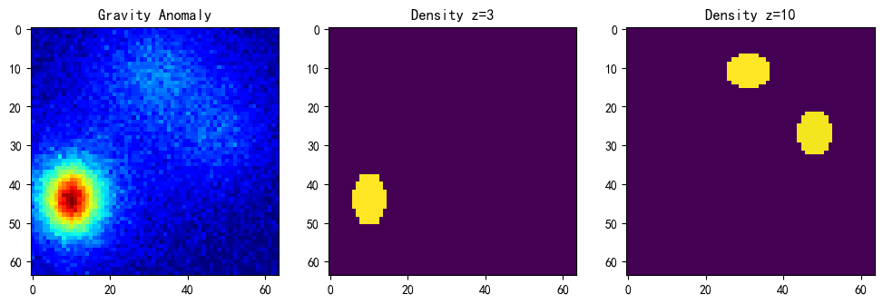
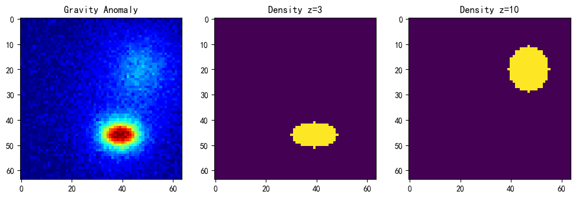
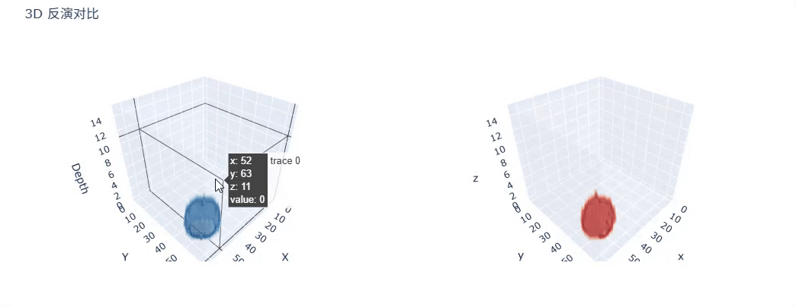

# 深度学习反演网络与重力异常之初窥门径
# 正演？
已知地下体的物理属性，比如密度、磁化率、电阻率和空间分布，预测或计算在地表或者测量点上观测到的地球物理异常。
已知地下体的 密度矩阵、已知体素在空间中的位置，计算 表面重力异常，这就是正演。
正演公式可以理解为：
： 这是你在地表（坐标 ）观测到的物理场信号，比如重力异常、磁力异常或地震波响应。
（过程）： 它意味着我们要把地下所有 “小方块”（网格单元）产生的贡献全部加起来。
： 这是单个单元对地表的贡献计算方式。
- ： 该单元的物性参数（如密度、磁化率、速度等）。
- ： 该单元距离地表观测点的几何位置关系。
针对重力方面，重力场的基础公式来源于牛顿万有引力定律：对于地表上的一点，受到地下体中一个体素 的密度 产生的垂直向重力加速度 为：
这里只考虑垂直方向的重力加速度，因为重力测量仪器主要测垂直分量。
分子上的 实际上代表了方向的投影，它决定了我们测量的到底是 “哪个方向” 的力。
当你将地下空间划分为一个个微小的三维网格时，公式演变为在代码中尝试实现的叠加形式：
# 反演
简单来说，正演是 “从因到果”，而反演是 “由果溯因”。
地心是去不了的，地壳是看不透的。 我们手里只有地表测到的那一张重力值地图 ，而我们真正的目的是想知道地下埋了什么 。反演的目标就是利用地表观测到的重力值，通过数学计算，倒推出地下的密度、形状和深度。
虽然反演很重要，但它有一个巨大的挑战：多解性。物理上，深处的一个大矿块和浅处的一个小矿块，可能在地表产生一模一样的重力异常。这就是为什么要在反演时需要加入 “约束条件” 比如已知的一口井的数据，或重力梯度异常 () 等高阶数据，因为梯度数据对浅部细节更敏感，能有效减少反演的模糊性。
# 深度学习反演
反演法有很多，这里主要展开深度学习反演法。组会中师兄的 U-Net 反演令我印象深刻，接下来就实现一下最初始版本的吧。
# 模拟数据集
数据集这方面我还没有了解很多，但是师兄汇报时候使用了模拟集，我也根据这个正演法生成一些模拟集吧。我的格子是 Z x H x W 是 16 x 64 x 64，我还加入了一些噪声。
下面是我模拟数据集的样子：
 # 模型：U-Net_ResNet50
import math | |
import torch.nn as nn | |
def conv3x3(in_planes, out_planes, stride=1, groups=1, dilation=1): | |
return nn.Conv2d(in_planes, out_planes, kernel_size=3, stride=stride, | |
padding=dilation, groups=groups, bias=False, dilation=dilation) | |
def conv1x1(in_planes, out_planes, stride=1): | |
return nn.Conv2d(in_planes, out_planes, kernel_size=1, stride=stride, bias=False) | |
class Bottleneck(nn.Module): | |
expansion = 4 | |
def __init__(self, inplanes, planes, stride=1, downsample=None, groups=1, | |
base_width=64, dilation=1, norm_layer=None): | |
super(Bottleneck, self).__init__() | |
if norm_layer is None: | |
norm_layer = nn.BatchNorm2d | |
width = int(planes * (base_width / 64.)) * groups | |
self.conv1 = conv1x1(inplanes, width) | |
self.bn1 = norm_layer(width) | |
self.conv2 = conv3x3(width, width, stride, groups, dilation) | |
self.bn2 = norm_layer(width) | |
self.conv3 = conv1x1(width, planes * self.expansion) | |
self.bn3 = norm_layer(planes * self.expansion) | |
self.relu = nn.ReLU(inplace=True) | |
self.downsample = downsample | |
self.stride = stride | |
def forward(self, x): | |
identity = x | |
out = self.conv1(x) | |
out = self.bn1(out) | |
out = self.relu(out) | |
out = self.conv2(out) | |
out = self.bn2(out) | |
out = self.relu(out) | |
out = self.conv3(out) | |
out = self.bn3(out) | |
if self.downsample is not None: | |
identity = self.downsample(x) | |
out += identity | |
out = self.relu(out) | |
return out | |
class ResNet(nn.Module): | |
def __init__(self, block, layers, num_classes=1000): | |
super(ResNet, self).__init__() | |
self.inplanes = 64 | |
self.conv1 = nn.Conv2d(1, 64, kernel_size=7, stride=2, padding=3, bias=False) | |
self.bn1 = nn.BatchNorm2d(64) | |
self.relu = nn.ReLU(inplace=True) | |
self.maxpool = nn.MaxPool2d(kernel_size=3, stride=2, padding=0, ceil_mode=True) | |
self.layer1 = self._make_layer(block, 64, layers[0]) | |
self.layer2 = self._make_layer(block, 128, layers[1], stride=2) | |
self.layer3 = self._make_layer(block, 256, layers[2], stride=2) | |
self.layer4 = self._make_layer(block, 512, layers[3], stride=2) | |
self.avgpool = nn.AvgPool2d(7) | |
self.fc = nn.Linear(512 * block.expansion, num_classes) | |
for m in self.modules(): | |
if isinstance(m, nn.Conv2d): | |
n = m.kernel_size[0] * m.kernel_size[1] * m.out_channels | |
m.weight.data.normal_(0, math.sqrt(2. / n)) | |
elif isinstance(m, nn.BatchNorm2d): | |
m.weight.data.fill_(1) | |
m.bias.data.zero_() | |
def _make_layer(self, block, planes, blocks, stride=1): | |
downsample = None | |
if stride != 1 or self.inplanes != planes * block.expansion: | |
downsample = nn.Sequential( | |
nn.Conv2d(self.inplanes, planes * block.expansion, | |
kernel_size=1, stride=stride, bias=False), | |
nn.BatchNorm2d(planes * block.expansion), | |
) | |
layers = [] | |
layers.append(block(self.inplanes, planes, stride, downsample)) | |
self.inplanes = planes * block.expansion | |
for i in range(1, blocks): | |
layers.append(block(self.inplanes, planes)) | |
return nn.Sequential(*layers) | |
def forward(self, x): | |
x = self.conv1(x) | |
x = self.bn1(x) | |
feat1 = self.relu(x) | |
x = self.maxpool(feat1) | |
feat2 = self.layer1(x) | |
feat3 = self.layer2(feat2) | |
feat4 = self.layer3(feat3) | |
feat5 = self.layer4(feat4) | |
return [feat1, feat2, feat3, feat4, feat5] | |
def resnet50(**kwargs): | |
model = ResNet(Bottleneck, [3, 4, 6, 3], **kwargs) | |
del model.avgpool | |
del model.fc | |
return model | |
class unetUp(nn.Module): | |
def __init__(self, in_size, out_size): | |
super(unetUp, self).__init__() | |
self.conv1 = nn.Conv2d(in_size, out_size, kernel_size=3, padding=1) | |
self.conv2 = nn.Conv2d(out_size, out_size, kernel_size=3, padding=1) | |
self.up = nn.UpsamplingBilinear2d(scale_factor=2) | |
self.relu = nn.ReLU(inplace=True) | |
def forward(self, inputs1, inputs2): | |
outputs = torch.cat([inputs1, self.up(inputs2)], 1) | |
outputs = self.conv1(outputs) | |
outputs = self.relu(outputs) | |
outputs = self.conv2(outputs) | |
outputs = self.relu(outputs) | |
return outputs | |
class Unet(nn.Module): | |
def __init__(self, num_classes=21): | |
super(Unet, self).__init__() | |
self.resnet = resnet50() | |
in_filters = [192, 512, 1024, 3072] | |
out_filters = [64, 128, 256, 512] | |
self.up_concat4 = unetUp(in_filters[3], out_filters[3]) | |
self.up_concat3 = unetUp(in_filters[2], out_filters[2]) | |
self.up_concat2 = unetUp(in_filters[1], out_filters[1]) | |
self.up_concat1 = unetUp(in_filters[0], out_filters[0]) | |
self.up_conv = nn.Sequential( | |
nn.UpsamplingBilinear2d(scale_factor=2), | |
nn.Conv2d(out_filters[0], out_filters[0], kernel_size=3, padding=1), | |
nn.ReLU(), | |
nn.Conv2d(out_filters[0], out_filters[0], kernel_size=3, padding=1), | |
nn.ReLU(), | |
) | |
self.final = nn.Conv2d(out_filters[0], num_classes, 1) | |
def forward(self, inputs): | |
[feat1, feat2, feat3, feat4, feat5] = self.resnet.forward(inputs) | |
up4 = self.up_concat4(feat4, feat5) | |
up3 = self.up_concat3(feat3, up4) | |
up2 = self.up_concat2(feat2, up3) | |
up1 = self.up_concat1(feat1, up2) | |
if self.up_conv != None: | |
up1 = self.up_conv(up1) | |
final = self.final(up1) | |
return final |
Total params: 43,927,504
Trainable params: 43,927,504Non-trainable params: 0
Input size (MB): 0.02
Forward/backward pass size (MB): 40.58
Params size (MB): 167.57Estimated Total Size (MB): 208.16
# 随便练 20 轮
import torch | |
import torch.nn as nn | |
import torch.optim as optim | |
from tqdm import tqdm | |
device = torch.device("cuda" if torch.cuda.is_available() else "cpu") | |
model = Unet(num_classes=16).to(device) | |
epoch = 20 | |
criterion = nn.BCEWithLogitsLoss() | |
optimizer = optim.Adam(model.parameters(), lr=0.001) | |
min_loss = np.inf | |
for e in tqdm(range(epoch)): | |
for X, Y in train_loder: | |
X = X.to(device) | |
Y = Y.to(device) | |
optimizer.zero_grad() | |
pred = model(X) | |
loss = criterion(pred, Y) | |
loss.backward() | |
optimizer.step() | |
print(f"Epoch {e + 1}/{epoch}, Loss: {loss.item():.4f}") | |
if loss < min_loss: | |
min_loss = loss.item() | |
torch.save(model.state_dict(), f"model_epoch_{e + 1}.pth") |
# 预测一下
一个异常体的效果还不错。
多个异常体的效果也还行，但是如果离得太近就会出现连体现象。


当然这个确实是源数据就在一起了，但是有微小分开的数据也是连在一起的。
# 总结
用深度学习做重力反演，从 地表重力异常 g (x, y)， 预测地下三维密度分布 ρ(x, y, z)，反演是病态的，而正演是确定的，深度学习适合 “约束型反演”，深度学习在这里学一个稳定的近似逆算子，而真实的逆是不存在的，深度学习正把这种不可能变成有些可能。